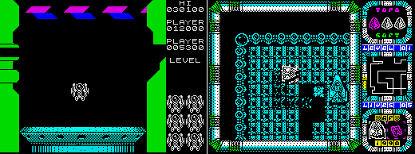
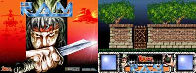

Entrevista a Alfonso Fernández Borro «Borrocop»
En esta ocasión entrevistamos a uno de los más prolíficos y grandes grafistas que nuestro Spectrum ha podido tener. Suyos son los gráficos de juegos como Viaje al Centro de la Tierra, Gremlins 2 o Zona 0, entre otros. Y próximamente nos sorprenderá de nuevo con una revisión para PC de un trabajo propio: un remake de R.A.M.
"Siempre trabajé y trabajo con la máxima de tener libertad a la hora de desarrollar mis ideas." |
 |
¿Cuándo pusiste tus manos en un ordenador por vez primera?
La primera vez que puse mis manos fue en casa de mi cuñado que se había comprado un Spectrum para llevar una base de datos y de regalo venían unos juegos en "casete" que eran casi igualitos a los juegos de las máquinas de videojuegos de los salones recreativos, fue mi primera experiencia allá por el año 1984, por lo que ya ha llovido lo suyo...
Y tu faceta de dibujante, ¿cómo surgió y cuándo la trasladaste a un ordenador?
Pues surgió desde que tenía uso de razón ya dibujaba en las paredes de mi casa, cosa que no debió ser de buen gusto para mis padres, que aprovecharon la ocasión para ilustrarme bien el trasero con la zapatilla de mi madre, he de decir que por lo que podéis comprobar no consiguieron desviar mi pasión por el dibujo.
Toda esta pasión me llevó dirigir mi carrera hacia el dibujo, quería haber sido arquitecto pero al acabar C.O.U. mi padre me dijo que la situación familiar no daba para pagarme la carrera y tuve que bajar un escalón empezando a estudiar delineación. Cuando estaba en el último curso, poco antes de irme a la mili, vi que había unas máquinas llamadas "plotters" que se cepillaban un plano de dibujo en menos de cinco minutos, mientras que yo ese mismo plano hubiera tardado alrededor de una semana. Entonces pensé: "debo dejar lo que estoy haciendo y ponerme a estudiar cómo funcionan estos infernales aparatos".
Se te conoce esencialmente por tu faceta de dibujante y grafista. Adicionalmente, ¿participabas de alguna manera en cada proyecto de otro modo: ya sea programando, diseñando...?
Si, hacía muchas más cosas, diseñaba niveles, mapeados, en muchos casos también en la elaboración de los proyectos dando ideas a la vez que al finalizar hacia de betatester de los juegos de mis compañeros.
Durante tu trayectoria profesional como diseñador gráfico has podido trabajar con diferentes equipos de trabajo. ¿Variaba tu forma de trabajar con cada uno de ellos?
Hombre, pues claro está que sí, aunque digamos que siempre trabajé y trabajo con la máxima de tener libertad a la hora de desarrollar mis ideas, aunque a posteriori luego haya los cambios oportunos.
¿Tenías completa libertad creativa para realizar los gráficos de los diferentes juegos que te encomendaban?
Normalmente sí, aunque casos como Gremlins 2 te obligaban a tener que basarte en unos modelos que ya estaban creados ya que eran protagonistas de la propia película.
Es ciertamente frustrante haber hecho unos gráficos alucinantes y que éstos sean rechazados por imposibilidad de implementarlos o por no gustarle al jefe. ¿Te ocurrió alguna vez esto con algunos de tus diseños?
No exactamente más bien se rechazaban del proyecto entero porque se cambiaba la filosofía del juego y la perspectiva de éste, como ocurrió con la continuación de R.A.M. que, después de tener el proyecto muy avanzado gráficamente, se cambió la perspectiva de cenital a isométrica afectando incluso al nombre del juego, pasando de ser la continuación de R.A.M. a Tronner; y por no poder utilizar ese nombre al no llegar a un acuerdo con Disney, a llamarse Zona 0 que es como todos lo conocisteis tiempo después.
Aparte del diseño sobre el papel, ¿también hacías las pertinentes conversiones finales en los ordenadores (Spectrum, Amstrad...)? ¿Qué programas usabas para ello?
Bueno digamos aquí que utilizábamos primero un soporte intermedio para las conversiones que era el Atari ST. Una vez que teníamos los gráficos finales en Spectrum pasábamos estos al Atari ST mediante conexión RS232-paralelo y en éste utilizábamos los programas de diseño Keating y Degas (creo que se llamaban así, ya no lo recuerdo bien) en donde pasábamos el típico píxel cuadrado de Spectrum al ladrillazo del CPC empezando también a darle color. Cuando lo teníamos mas o menos desarrollado lo volvíamos a pasar, esta vez del Atari ST al Amstrad CPC donde le dábamos los retoques finales con los programas Screen Designer u otro que teníamos parcheado por allí.
| 
|
| Atomito Fotón (Izda.) y R.A.M. 2, dos juegos que no llegaron a ver la luz |
¿Cómo era un día normal de trabajo en Topo Soft: teníais un horario flexible, ambiente distendido... o todo lo contrario?
El día normal era tan normal como el de cualquier trabajador, el horario no era nada flexible sino que teníamos que firmar tanto a la salida como la entrada de la jornada de 8 horas. En cuanto al ambiente, era distendido en un principio pero, según pasaron los años, fue haciéndose cada vez menos respirable, hasta el final, en el que aquello parecía más un ministerio y nosotros meros funcionarios.
La entrada de Gabriel Nieto en Topo Soft marcó un punto de inflexión en la compañía, pasando a convertirse en una auténtica empresa. ¿Cambió esto vuestra forma de trabajar en los proyectos? ¿Se os exigía más?
Esto es como el fútbol que cuando se cambia de entrenador se cambia la forma de trabajar. Quizás Gabriel Nieto fuera menos entendido en como se hacían los juegos desde abajo, como lo era Javier Cano que lo venía mamando desde un principio, pero al contrario, que éste en lo comercial y el diseño era un auténtico formula 1, por la que Gabriel consiguió un equilibrio entre lo que se hacía y lo que se vendía, cosa que Javier no fue nunca capaz. Los juegos de Javier fueron casi siempre mejores, más jugables incluso, pero Gabriel fue capaz de venderles polos a los esquimales. Como caso puede decirse el "Score 3020" un pinball injugable pero que gracias a él y a la manera de llevar el marketing tuvo unas excelentes ventas para la mierda que era.
Varios de vuestros programas, como, por ejemplo, Viaje al Centro de la Tierra, fueron muy bien recibidos tanto por el público como por la critica especializada. ¿Cómo recibíais este tipo de halagos dentro del equipo de desarrollo?
La verdad es que en esta caso fue un tema un poco agridulce. Acababan de despedir a la mitad de la plantilla y de los integrantes del proyecto, con lo que fue un halago empañado por la tristeza del que no pudimos reponernos en mucho tiempo. En cuanto a otros títulos, pues nos llenaba de satisfacción comprobar que el esfuerzo había merecido la pena, viendo que la gente les gustaba tanto como a nosotros hacerlo.
¿Y el caso contrario: recuerdas si hubo algún juego que pensarais que iba a ser un bombazo y no ocurrió así?
No, se sabía de antemano que programas iban a tener tirón y cuales no pasarían de ser verdaderas bazofias dignas de no haber salido nunca al mercado, pero claro está que había que recuperar la inversión.
Evidentemente lo primero en que te fijarás de un juego, es en sus gráficos. ¿había algún diseñador de 8 bits del que tuvieras "sana" envidia?
Sana sana pero sanísima envidia de mi buen amigo Jorge Azpiri el mejor de aquella época y el mejor también después en 16 bits. Además viéndole trabajar aprendías un montón y era compañerísimo ayudándote en todo momento y aportaba ideas para que los demás hiciéramos un trabajo con más calidad.
Actualmente, además de tu trabajo profesional, te has volcado en el desarrollo de 'remakes', trabajando en un juego tuyo ("RAM 2") haciendo los gráficos. ¿Cómo surgió esta posibilidad?
Bueno, encontré un grupo de guerreros que no quieren tirar sus viejas máquinas y que viven en un pequeño país llamado CEZ GS, dentro del mundo de Computer Emuzone a los que me he unido para sacar del olvido algunos proyectos que no llegaron a salir al público como ese RAM 2 del que antes os hablé.
¿En qué otros proyectos estás involucrado ahora mismo?
Jejeje, en este mundillo no se pueden decir las cosas muy alto cuando todo está en pañales, pero puedo adelantaros que mis gráficos verán la luz antes de final de año para Pc… y hasta aquí puedo leer, como decían en el 1, 2, 3...
| 
|
| Un adelanto gráfico del remake de R.A.M. para PC |
¿Hay prevista alguna colaboración tuya en alguna versión de ordenadores de 8 bits?
En principio solamente estoy con lo de RAM 2, aunque muy por encima, ya que no tengo tiempo para hacer muchas cosas para estas máquinas. Aunque pienso que algo haré cuando termine con lo de RAM 2.
Es curioso comprobar como hay gente que rechaza hablar, al contrario que tú, de su pasado como desarrollador de 8 bits. ¿Tan "olvidable" crees que fue aquella época?
Hay gente que pasó por este mundo del 8 bit como mero "mercenario del soft" y, como eso no fue su guerra, no tiene nada que decir. Yo, por el contrario, disfruté de esa época y no tengo que esconderme, sino al contrario, disfrutar con vosotros compartiendo experiencias que es lo que hace que seamos entre todos más grandes y que este mundillo sea tan genial.
Tu currículum profesional es impresionante: Iber Soft, Topo Soft, Lucas Arts, Pyro Studios... ¿En cuál te sentiste más a gusto profesionalmente?
En Topo, claro está, fue el lugar en que desarrollé mis trabajos con más libertad, con un ambiente mucho más sano, entrañable y en donde conocí a muchos y muy buenos amigos.
¿Alguna compañía en la que te hubiera gustado trabajar, ya sea nacional o extranjera?
Por las nacionales pasé por casi todas. Quizás me hubiera gustado trabajar para Zigurat de las de aquí. En cuanto a las extranjeras no puedo traicionar a mis ideas y, sin dudarlo, Ultimate, aunque tampoco me hubiera importado hacerlo para Vortex o Mikro-gen.
Gracias por contestar a nuestra entrevista y si quieres comentar algo más, éste es tu espacio...
Gracias a vosotros por dedicarme un tiempo de vuestra vida cuando jugabais con los juegos que hice y, sobre todo, gracias por esta entrevista que espero que os guste y la disfrutéis como yo la he disfrutado contestando lo más sinceramente posible. Seguro que estaremos en contacto.